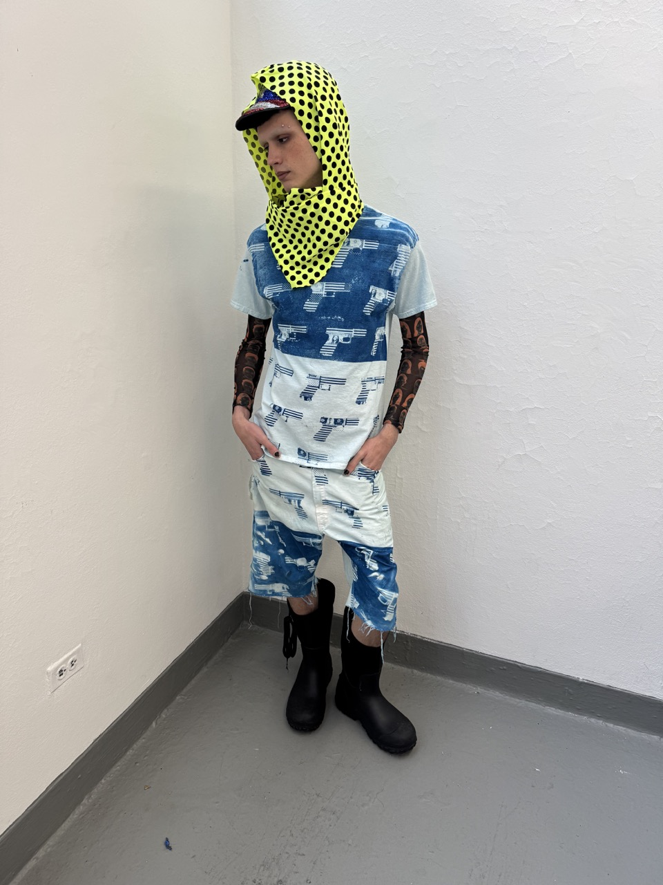
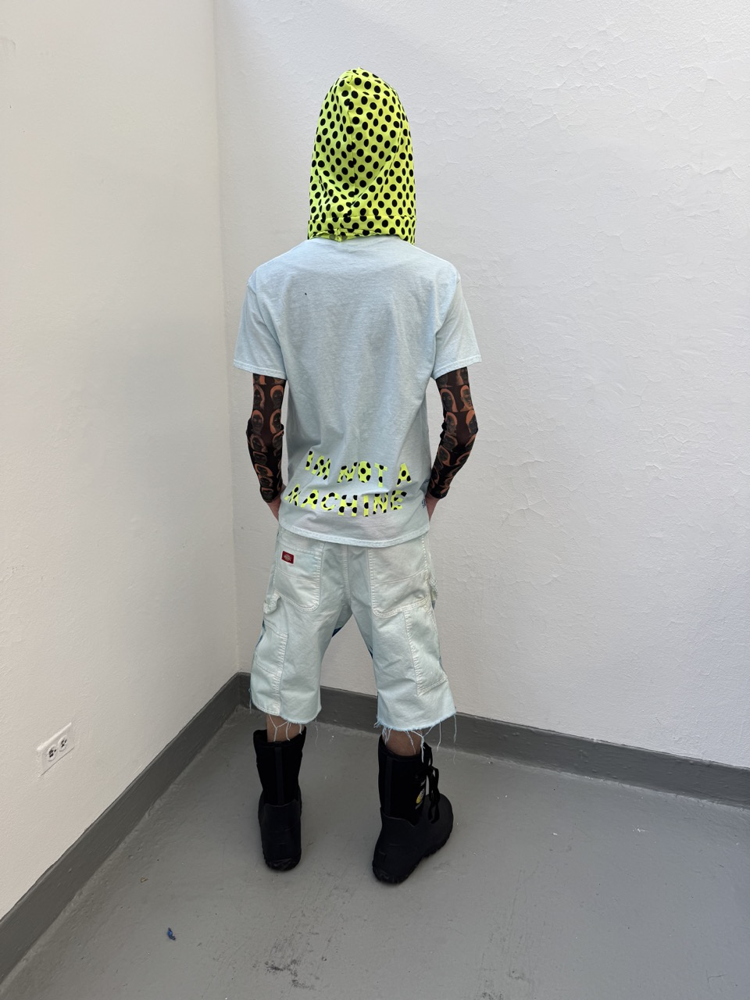
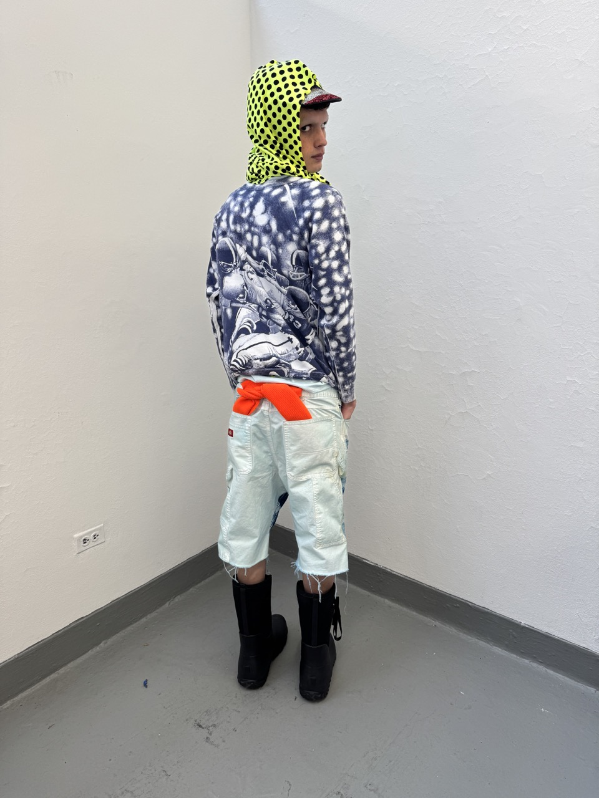

╾━╤デ╦︻
A graphic study on American symbolism and propoganda.



☯ The Poor suffer from lack and The Rich suffer from greed.
Money is a thing that is not worth chasing.
Try to find a balance between spiritual and material reality and try to grow a garden there.